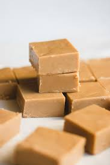

Fudge Recipe

Description
South Africa's favourite sweet treat - now YOU can make it too!
Heaven has never been more tangible
Ingredients
- 375 g Condensed Milk
- 400ml Sugar
- 25ml Golden Syrup
- 75ml Water
- 60g Butter
- 5ml Vanilla
Steps
- Place sugar and water into a large saucepan.
- Stir over low heat until the sugar has completely dissolved.
- Add the butter and syrup and stir until the butter has melted.
- Add the condensed milk and stir until it all comes to a boil.
- Boil very slowly, stirring all the time, until the soft ball stage.
- Remove from the stove, add the vanilla and beat until thick.
- Pour into a greased pan and leave to cool.
- Cut into squares when cold.
- ENJOY!